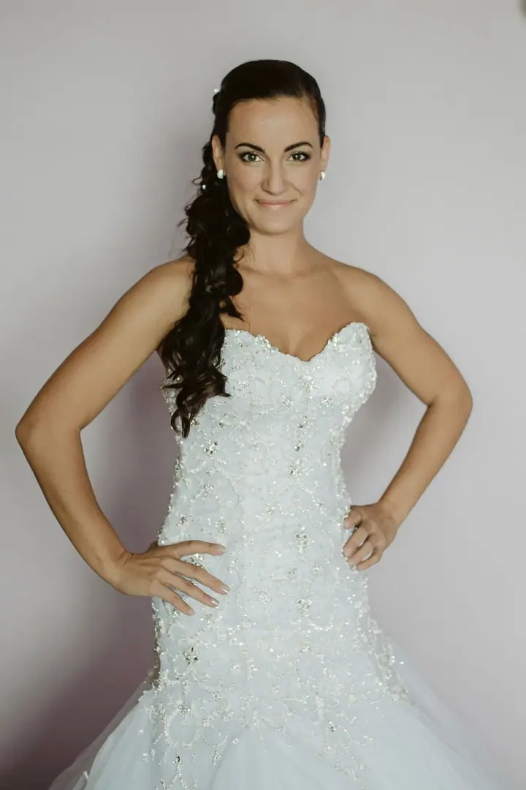
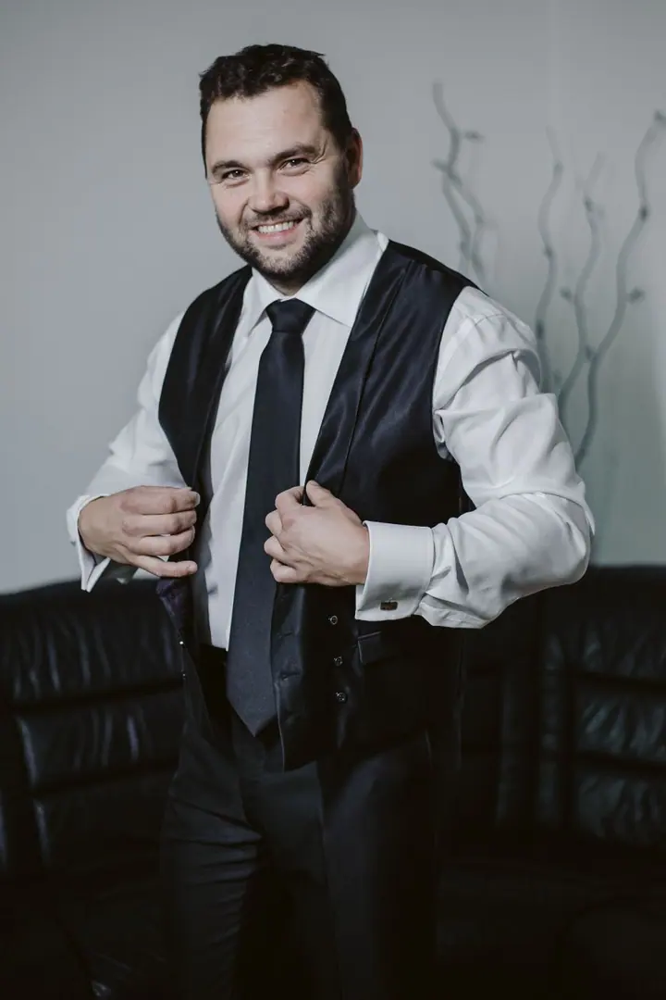
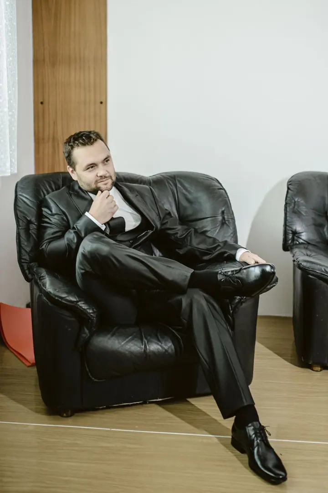
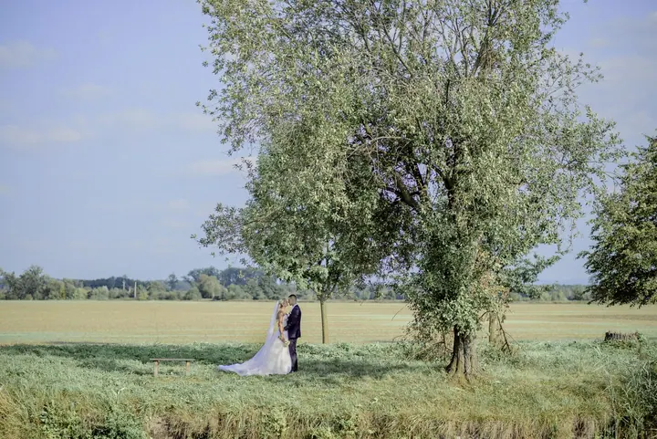
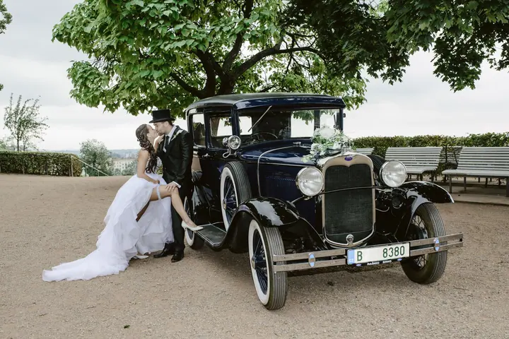
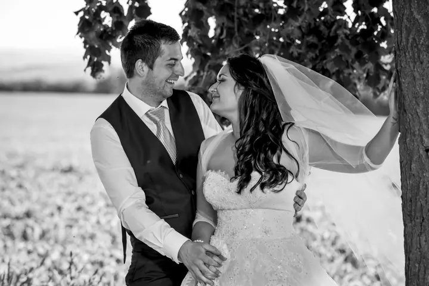

Svatební focení
Fotím několik hodin nebo celý den, od příprav nevěsty a ženicha přes obřad až po první tanec. Fotím reportážně, diskrétně a bez rušivých světel. Skupinové fotky s rodinou zvládnu rychle.





Jmenuji se Pavel Zahálka a jsem svatební fotograf z Olomouce, který fotí svatby po celé České republice. Svatební den s vámi projdu od ranních příprav nevěsty a nervózního ženicha až po procházku jen ve dvou. Nenápadně, v klidu a s úsměvem.
Více o mně
„Věřím, že nejkrásnější fotografie vznikají tehdy, když si lidé focení ani nevšimnou.“
— Pavel Zahálka
Fotím několik hodin nebo celý den, od příprav nevěsty a ženicha přes obřad až po první tanec. Fotím reportážně, diskrétně a bez rušivých světel. Skupinové fotky s rodinou zvládnu rychle.
Focení jen pro vás dva, ještě před velkým dnem. Poznáme se, uvolníte se před objektivem a na svatbě už budete vědět, jak spolu pracujeme.
Fotím firemní večírky, klubové akce a kulturní eventy v Olomouci a Ostravě. Mám profesionální vybavení i osvětlení, takže fotky zvládnu i v náročných podmínkách.
Rodinné focení a rodinné oslavy fotím stejně jako svatby: s osobním přístupem a důrazem na skutečné emoce, ne na strojené pózy.
Svatby fotím přes deset let a za tu dobu jsem byl u stovek z nich. Každá byla jiná a každá měla svůj příběh. Díky tomu mě nezaskočí špatné světlo, déšť, změna programu ani nervózní ženich. Jsem členem ISPWP a Fearless Photographers a moje fotografie vyšly v magazínu Harper’s Bazaar.
Svůj styl označuji jako reportážní svatební fotografii. Nezastavuji vás každých pět minut, aby jste se usmáli do objektivu. Pozoruji, předvídám a mačkám spoušť ve chvíli, kdy se něco opravdu děje. Smích babičky při tanci, slzy táty při projevu, pohled nevěsty přes celý sál. Tradiční skupinové fotky s rodinou samozřejmě nevynechám, jen je zvládnu rychle, aby nikoho nezdržely.
Kromě svateb fotím předsvatební a rodinné focení, firemní večírky a kulturní akce v Olomouci a Ostravě. Nejvíc mě ale pořád baví atmosféra svatebního dne, kdy se sejdou rodiny a přátelé, aby oslavili lásku. Zajímá vás víc? Napište mi a probereme vaši představu u kafe.
Napište mi a probereme vaši představu. Spolupráce začíná dávno před svatbou, takže se nejdřív poznáme.
Společně projdeme lokalitu, harmonogram i styl fotografií. Termín si zablokuji po složení rezervační zálohy.
Přijdu připravený, s plánem a záložním vybavením. Fotím od příprav přes obřad a hostinu, krátce před západem slunce si vás na 20–30 minut odvedu na portréty ve zlaté hodince.
Fotky mám většinou hotové do jednoho týdne. Posílám je poštou na USB flash spolu s tištěnými fotografiemi, na přání i ve svatebním albu.
Doporučuji alespoň 3–12 měsíců před svatbou. Každou sezonu ale mám i svatbu na poslední chvíli, když se trefíte do volného termínu.
Záleží jen na vás. Můžeme spolu strávit pár hodin nebo celý den. Obvykle začínám už během příprav nevěsty a ženicha.
Počet záleží na délce focení. Z celodenního focení odevzdávám 300–400 pečlivě upravených fotografií, upravených tak, jak je vidíte v mém portfoliu.
Ano, beru si rezervační zálohu, abych mohl termín zablokovat v diáři. Zbytek můžete zaplatit v den svatby nebo pár dní po ní, podle toho, co vám vyhovuje.